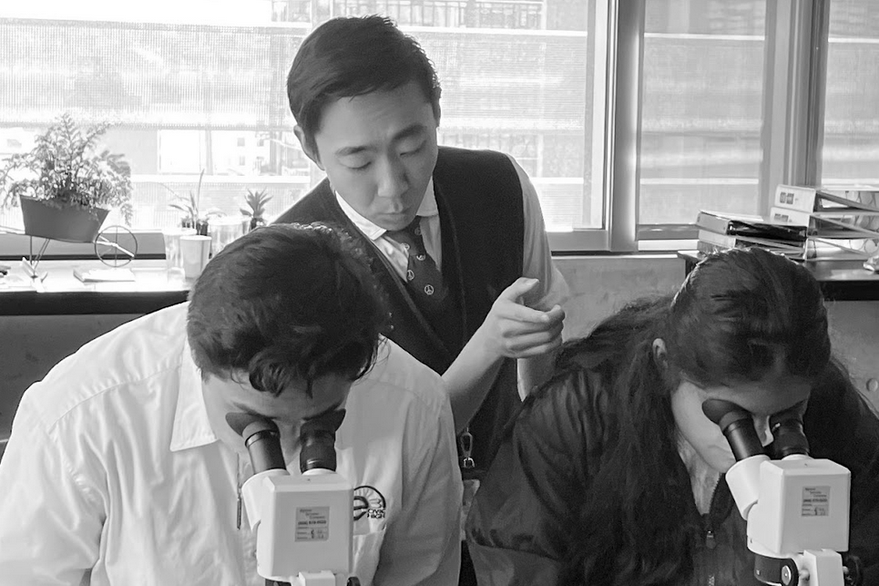
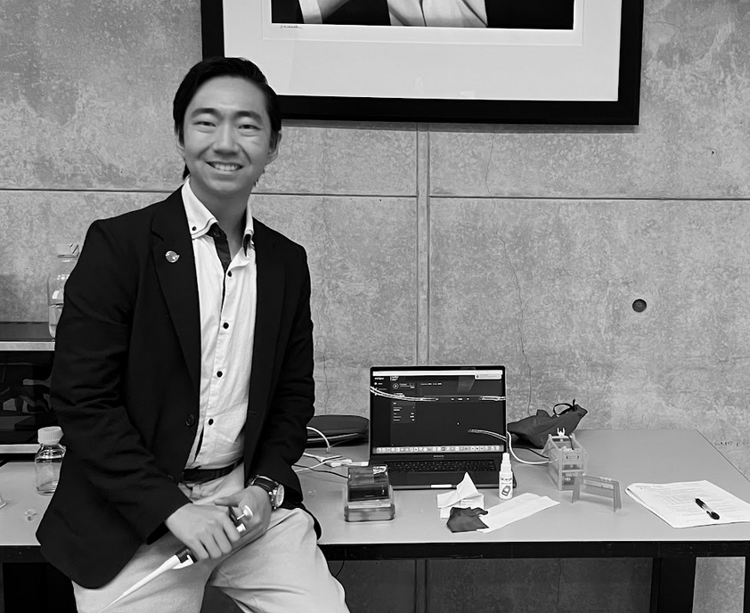
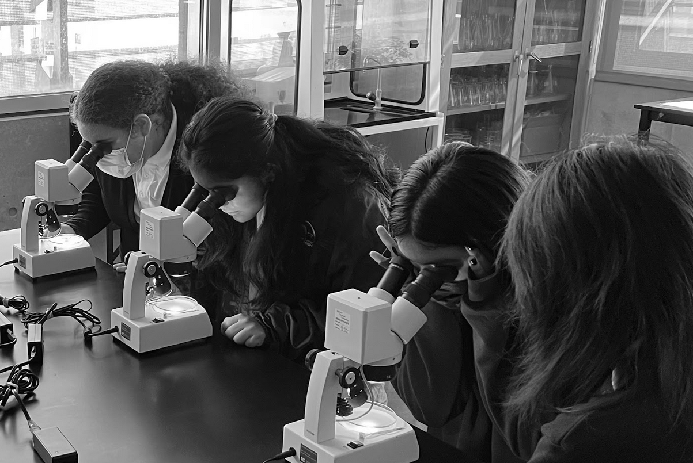

LEADERSHIP
Lead a team of secondary students to produce a project pitch of an automated trash sorter based on photonic/wavelength spectrometry results.
Commenced connection efforts to highlight said team to a Spotlight Community public podcast. Spoke as a representative in providing catalysts for students to tackle local and global problems by offering entrepreneurial initiatives.
Undertook voluntary efforts to secure grants, including a $140,000 scholarship, through proactive mentorship and outreach
Initiated collaboration with the Salk Institute to provide equipment and offer instruction in lab techniques for a title 1 secondary school, e3 Civic High